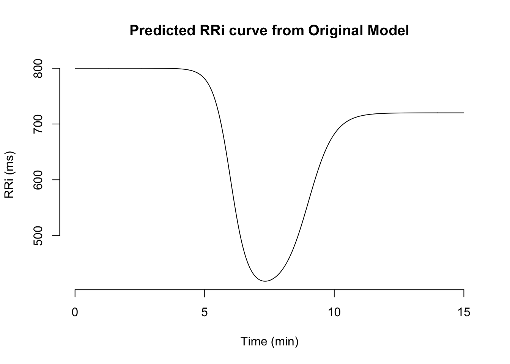
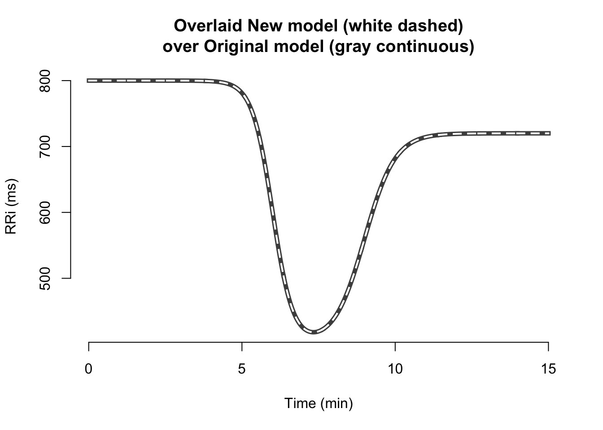
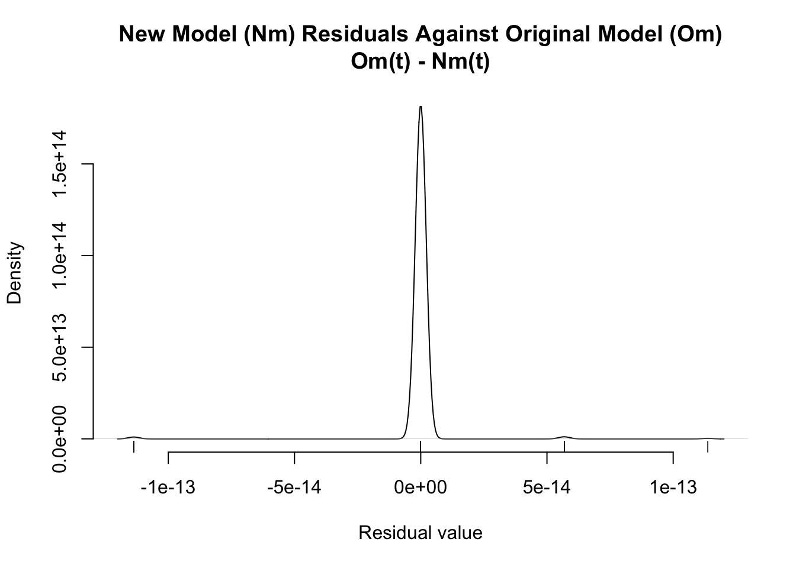

params <- list(
alpha = 800, beta = 400, c = 0.8, ## Magnitude parameters
lambda = 3, phi = 2, ## Steepness parameters
tau = 6, delta = 3 ## Timing parameters
)Introduction
When modeling cardiac autonomic dynamics, which is how the autonomic nervous system controls the cardiac activity, there is a need to understand the impact of the parameters controlling the dynamics of exercise-induced fluctuations in the heart rhythm. Non-linear parametric models are typically the go-to when modeling relationships from where we know the data-generation process or at least the overall functions that mimic the behavior of the system. This type of models enables researchers to better comprehend the influence of the parameters controlling the shape of the cardiac temporal dynamics during stressful situations like exercise, which could ultimately predict health related outcomes, help us better understand the intricate mechanisms behind cardiac-autonomic modulation behind the brain-heart crosstalk.
Moreover, the use of non-linear parametric functions allows not only to flexibly capture the parameters controlling a physiological process, but also, to estimate physiologically relevant parameters that can have practical significance and be valuable tools in health risk assessment. This type of models, not only allows the estimation of clinically relevant parameters, but they also make inference transparent by knowing how each parameter influence the overall observed cardiac behavior. In this sense, other denominated “black-box” models that, even though are powerful in prediction settings, they do not allow for ease of interpretation or the estimation of clinically meaningful model parameters. In this context, Castillo-Aguilar et al. (2025) have proposed a non-linear model based on coupled logistic functions that captures the transient behavior of the time between heartbeats, denominated R-R intervals (RRi), during an full rest-exercise-recovery period.
However, even though using non-linear models provides a very flexible and easy to interpret interface, they are computationally intensive and can often fail to identify a unique set of parameters that yield the same observed data. Of course there are many solutions to this set of problems. For instance, some may use box-constrained algorithms based on gradient projection methods, nonetheless they fail to capture the uncertainty behind model parameters. Alternatively, one may try using informative Bayesian priors to ensure targeted exploration over a delimited parameter space, however this requires highly specific domain knowledge, which is not always possible for very complex non-linear models or in exploratory settings. One may argue that a potential solution, is to apply a model reparameterization to ensure that model parameters are unsconstrained over the real numbers, allowing unbounded exploration with simpler parameter space geometry.
Nonetheless, non-linear models like the one proposed by Castillo-Aguilar et al. (2025), which describes the time-depedent trajectory of RRi during exercise, present model parameters that are sensitive to the time scale. For instance, a \(\lambda\) parameter of 3, which controls the rate of exercise-related decline in RRi, does not mean the same steepnees in a 2-hour long exercise, than in a 15-minute protocol. This makes the parameter uninterpretable under different experimental designs that use different time scales other than minutes, which is the time-scale originally used to validate this model. Additionally, these scale-sensitive model parameters are also on different scales, difficulting parameter exploration and estimation processes, which by itself, translates into longer and expensive computation times and convergence issues, like unindentifiability of model parameters.
For these reasons, we propose in this work a scale-agnostic reparameterization of the original Castillo-Aguilar’s RRi-vs-time model, which will allow not only real-defined parameters, and in consequence, a computationally efficient model for parameter exploration algorithms, but also, physiologycally interpretable parameters that hold significance for practitioners, clinicians and researchers. Finally, we will also show differente indices that can be computed from the new parameters that will help others to gain insights into exercise-related cardiac autonomic dynamics in the context of brain-body crosstalk.
Non-linear RRi-vs-Time model
Let’s consider the baseline parameters of the Castillo-Aguilar RRi-vs-time model with absolute parameters and the model reparameterized to support this sign-agnostic model parameters.
And a time vector \(t\), where \(t \in \mathbb{R}^+\), which is generated as follow:
t <- seq(0.01, 15, 0.01)The model supporting these magnitude-only parameters is parameterized like the following:
\[ \alpha - \frac{\beta}{1 + e^{-\lambda (t - \tau)}} + \frac{c \beta}{1 + e^{-\phi (t - \tau - \delta)}} \]
Next, we can use this model to generate simulated RRi data from a rest-exercise-recovery protocl in R like this:
sim_rri <- with(params, {
alpha -
beta / (1 + exp(-lambda * (t - tau))) +
(c * beta) / (1 + exp(-phi * (t - tau - delta)))
})
str(sim_rri) ## Let's see the structure of the simulated data num [1:1500] 800 800 800 800 800 ...Additionally, we can then visualize the simulated RRi signal in R by using the plot() function:
plot(t, sim_rri, type = "l",
main = "Predicted RRi curve from Original Model",
xlab = "Time (min)", ylab = "RRi (ms)",
axes = FALSE); axis(1);axis(2)
Reparameterized model parameters
In esence, we need to reparametrized the model parameters so every new parameters can extend along the real number, but provide a feasable prediction of the RRi dynamics over time. Additionally, the parameters need to be robust enought to changes in the scale of time, so the same parameters can mean the same overall shape, independent if the timescale is on minutes, hours, percentages, or time-to-event timescales.
For each parameter we present the transformation of the original parameter into the new reparameterized form, alongside the inverse transformation. In this manner, we got a new equation to plug into the original model, replacing the old parameter. In addition, the inverse transformation serves as a way to obtain the old parameters back from the reparameterized model, allowing reversibleness between model parameters.
Baseline \(\alpha\) parameter
For the baseline parameter, we’re going to center and scale \(\alpha\) for the standard deviation (\(S_{\mathrm{RRi}}\)) and mean RRi (\(\bar{\mathrm{RRi}}\)) observed from the RRi data. This previously computed parameters will serve to refer to the new parameter \(\alpha_z\) as an standardized version of \(\alpha\).
\[ \begin{align} \alpha = \alpha_z \cdot S_{\mathrm{RRi}} + \bar{\mathrm{RRi}} \\ \alpha_z = \frac{\alpha - \bar{\mathrm{RRi}}}{S_{\mathrm{RRi}}} \end{align} \]
Exercise-induced drop \(\beta\) parameter
For the parameter \(\beta\), that controls the exercise-induced drop part of the RRi curve, we’ll also scale it, so it is in the same units (standard deviations) of the \(\alpha\) parameter. This new parameter will be \(\beta_z\).
\[ \begin{align} \beta = \beta_z \cdot S_{\mathrm{RRi}} \\ \beta_z = \frac{\beta}{S_{\mathrm{RRi}}} \end{align} \]
Recovery proportion \(c\) parameter
The parameter controlling the recovery proprotion is a parameter bounded at zero at the lower limit, and physiologically bounded at 1.5 or 2, with no hard upper limit. In this case, we need a transformation that allows the new model parameter to be on the real line (i.e., \(c_\mathbb{R} \in \mathbb{R}\)). For this we limit the values of \(c\) from 0 to 2, which contains physiologically extreme, but plausible, recovery proportion values.
\[ \begin{align} c = \frac{2e^{c_\mathbb{R}}}{1 + e^{c_\mathbb{R}}} \\ c_\mathbb{R} = \log\left( \frac{c}{2 - c} \right) \end{align} \]
Rate parameters \(\lambda\) and \(\phi\)
The parameters controlling the steepness of the exercise-induced drop and recovery are given by \(\lambda\) and \(\phi\) parameters. These parameters are defined on the positive real line, \(\mathbb{R}^+\). To convert this parameters so they can extend on the complete real numbers, we can apply a logarithmic transformation.
\[ \begin{align} \lambda = e^{\lambda_\mathbb{R}} \\ \lambda_\mathbb{R} = \log(\lambda) \end{align} \]
This also applies for the \(\phi\) parameter.
\[ \begin{align} \phi = e^{\phi_\mathbb{R}} \\ \phi_\mathbb{R} = \log(\phi) \end{align} \]
This way we obtain real defined rate parameters \(\lambda_\mathbb{R}\) and \(\phi_\mathbb{R}\).
Timing parameters \(\tau\) and \(\delta\)
These parameters control the time-dependent kinetics of the RRi curve. This means, they control the “when” things happen. To make this parameters agnostic to the time scale, we thought to make a similar implementation to the \(c\) parameter, by leveraging the inverse logistic function. However, for this to make sense, we need these parameters to be constraint in the 0 to 1 range (like a probability). To accomplish this, we first need to make that \(\tau\) (and \(\delta\) as well as we’ll further see), are percentages of the current time range, \(\Delta t\). This can be made by declaring this new parameter, let’s say \(\tau_\gamma\) and \(\delta_\gamma\).
For \(\tau_\gamma\) this would be:
\[ \begin{align} \tau = t_{min} + \Delta t \cdot \tau_\gamma \\ \tau_\gamma = \frac{\tau -t_{min}}{\Delta t} \end{align} \]
And for \(\delta_\gamma\) it would be:
\[ \begin{align} \delta = \Delta t \cdot \delta_\gamma \\ \delta_\gamma = \frac{\delta}{\Delta t} \end{align} \]
Then, we can work with this new parameter and apply the inverse logistic function to map this new parameter in the real line. This way, we obtain the new parameters \(\tau_\mathbb{R}\) and \(\delta_\mathbb{R}\).
The transformation would to obtain \(\tau_\mathbb{R}\) from \(\tau_\gamma\) would be:
\[ \begin{align} \tau_\gamma = \frac{e^{\tau_\mathbb{R}}}{1 + e^{\tau_\mathbb{R}}} \\ \tau_\mathbb{R} = \log \left( \frac{\tau_\gamma}{1 - \tau_\gamma} \right) \end{align} \]
And the similar transformation would apply to obtain \(\delta_\mathbb{R}\) from \(\delta_\gamma\):
\[ \begin{align} \delta_\gamma = \frac{e^{\delta_\mathbb{R}}}{1 + e^{\delta_\mathbb{R}}} \\ \delta_\mathbb{R} = \log \left( \frac{\delta_\gamma}{1 - \delta_\gamma} \right) \end{align} \] The full operation to transform \(\tau\) from \(\tau_\mathbb{R}\) and and back is the following:
\[ \begin{align} \tau = t_{min} + \Delta t \underbrace{ \left( \frac{e^{\tau_\mathbb{R}}}{1 + e^{\tau_\mathbb{R}}} \right) }_{\tau_\gamma} \\ \tau_\mathbb{R} = \log\left( \frac{\tau - t_{min}}{t_{min} + \Delta t - \tau} \right) \end{align} \]
For \(\delta\) and \(\delta_\mathbb{R}\) the operation is simplier, given that we don’t have the term \(t_{min}\):
\[ \begin{align} \delta = \Delta t \underbrace{ \left( \frac{e^{\delta_\mathbb{R}}}{1 + e^{\delta_\mathbb{R}}} \right) }_{\delta_\gamma} \\ \delta_\mathbb{R} = \log \left( \frac{\delta}{\Delta t - \delta} \right) \end{align} \]
This sequence of operations allows to, not only estimate parameters that are computationally efficient to explore and sample from, but also, are physiologically and practically meaningful. Parameters like \(\tau_\gamma\) and \(\delta_\gamma\) are time-agnostic, which allows for the interchangeable interpretation on exercise protocols with different time-frames and protocols.
Full reparameterized model
Considering the aforementioned transformations on the original model parameters, let’s recall the old model structure:
\[ \alpha - \frac{\beta}{1 + e^{-\lambda (t - \tau)}} + \frac{c \beta}{1 + e^{-\phi (t - \tau - \delta)}} \]
By replacing the old model parameters with the new ones, we would ended up with a raw model that would look like something this:
\[ (\alpha_z \cdot S_{\mathrm{RRi}} + \bar{\mathrm{RRi}}) - \frac{\beta_z \cdot S_{\mathrm{RRi}}}{\left(1 + e^{ -e^{\lambda_\mathbb{R}}\left(t - \left( t_{min}+\Delta t \left( \frac{e^\tau_\mathbb{R}}{1 + e^{\tau_\mathbb{R}}} \right) \right)\right)}\right)} + \frac{ \left(\frac{2e^{c_\mathbb{R}}}{1 + e^{c_\mathbb{R}}} \right) \cdot \beta_z \cdot S_{\mathrm{RRi}}}{\left(1 + e^{ -e^{\phi_\mathbb{R}}\left(t - \left( t_{min}+\Delta t \left( \frac{e^\tau_\mathbb{R}}{1 + e^{\tau_\mathbb{R}}} \right) \right) - \left( \Delta t \left( \frac{e^{\delta_\mathbb{R}}}{1 + e^{\delta_\mathbb{R}}} \right) \right)\right)}\right)} \]
This model can be further rewritten to rearrange the fraction in the numerator of the second logistic component like this:
\[ (\alpha_z \cdot S_{\mathrm{RRi}} + \bar{\mathrm{RRi}}) - \frac{\beta_z \cdot S_{\mathrm{RRi}}}{\left(1 + e^{ -e^{\lambda_\mathbb{R}}\left(t - \left( t_{min}+\Delta t \left( \frac{e^\tau_\mathbb{R}}{1 + e^{\tau_\mathbb{R}}} \right) \right)\right)}\right)} + \frac{2e^{c_\mathbb{R}} \cdot \beta_z \cdot S_{\mathrm{RRi}}}{(1 + e^{c_\mathbb{R}})\left(1 + e^{ -e^{\phi_\mathbb{R}}\left(t - \left( t_{min}+\Delta t \left( \frac{e^\tau_\mathbb{R}}{1 + e^{\tau_\mathbb{R}}} \right) \right) - \left( \Delta t \left( \frac{e^{\delta_\mathbb{R}}}{1 + e^{\delta_\mathbb{R}}} \right) \right)\right)}\right)} \]
Additionally, the exponents in the neperian terms can still be simplified by common terms and sign propagation to arrive to an even elegant solution:
\[ (\alpha_z \cdot S_{\mathrm{RRi}} + \bar{\mathrm{RRi}}) - \frac{\beta_z \cdot S_{\mathrm{RRi}}}{\left(1 + e^{ -e^{\lambda_\mathbb{R}}\left(t - t_{min} - \Delta t \left(\frac{e^\tau_\mathbb{R}}{1 + e^{\tau_\mathbb{R}}} \right) \right)}\right)} + \frac{2e^{c_\mathbb{R}} \cdot \beta_z \cdot S_{\mathrm{RRi}}}{(1 + e^{c_\mathbb{R}})\left(1 + e^{ -e^{\phi_\mathbb{R}}\left(t - t_{min} - \Delta t \left( \frac{e^\tau_\mathbb{R}}{1 + e^{\tau_\mathbb{R}}} + \frac{e^{\delta_\mathbb{R}}}{1 + e^{\delta_\mathbb{R}}} \right) \right)}\right)} \]
And in this way, we’ve finally arrived to the final form of the reparameterized RRi-vs-time model, which is generalizable to support a plethora of protocols and time schemes by only capturing shape-related aspects of the RRi curve, allowing its use varying experimental settings.
Now we will try to visualize the new model and try to see if any difference from the original model arises, since this would mean that the model is capturing a process different from the originally thought.
First, we will estimate the new parameters from the original magnitude-only model parameters to test the generalization of our original non-linear model.
params <- within(params, {
## Fixed parameters — Estimated 'a priori' from the data
rri_bar <- 650 # Observed RRi mean from crude data
S_rri <- 150 # Observed RRi standard deviation from the mean
t_min <- min(t) # Minimum time from the data
Delta_t <- diff(range(t)) # Difference of range of time
## Estimated parameters —
alpha_z <- (alpha - rri_bar) / S_rri
beta_z <- beta / S_rri
c_r <- log(c / (2 - c))
lambda_r <- log(lambda)
phi_r <- log(phi)
tau_r <- log((tau - t_min)/(Delta_t - tau + t_min))
delta_r <- log((delta)/(Delta_t - delta))
})Then, by having all the needed parameters to this model, we can be implement it in R as follow:
sim_rri_2 <- with(params, {
## Reparameterized parameters
alpha_term <- (alpha_z * S_rri + rri_bar)
beta_term <- (beta_z * S_rri)
c_term <- (2 * exp(c_r)) / (1 + exp(c_r))
lambda_term <- exp(lambda_r)
phi_term <- exp(phi_r)
tau_term <- t_min + Delta_t * (exp(tau_r) / (1 + exp(tau_r)))
delta_term <- Delta_t * (exp(delta_r) / (1 + exp(delta_r)))
## Symbolic representations of the old parameters by their previous position
## which allows easier tractability for the generalizable model
alpha_term -
beta_term / (1 + exp(-lambda_term * (t - tau_term))) +
(c_term * beta_term) / (1 + exp(-phi_term * (t - tau_term - delta_term)))
})This model implementation of the original RRi-vs-time model should provide the same estimations for a given time \(t\) as the original model. First, we will visualize the overlaid estimations, from the new and original models.
plot(t, sim_rri, type = "l", col = "gray30", lwd = 5,
xlab = "Time (min)", ylab = "RRi (ms)", lend = "square",
main = "Overlaid New model (white dashed)\nover Original model (gray continuous)",
axes = FALSE); axis(1); axis(2)
lines(t, sim_rri_2, col = "white", lwd = 2, lty = 2, lend = "square")
Additionally, let’s check the difference between pairwise predicted values to get a measure of error from the new model agains the original model. This is similar to what residuals are meant to be. All data points should be centered around zero.
plot(density(sim_rri - sim_rri_2),
main = "New Model (Nm) Residuals Against Original Model (Om)\nOm(t) - Nm(t)",
xlab = "Residual value",
axes = FALSE); axis(1); axis(2)
rug(sim_rri - sim_rri_2)
As we can see, most values are centered around zero, suggesting that the differences between models is neglible. However, we see some values different from zero, but that are on the 10-13 magnitude. For reference, this is equivalent to an error in the predicted RRi by less than 0.0000000000001 ms between models, suggesting mainly rounding errors derived from handling irrational values from natural logarithms and euler exponents.
Simulation
Now that we have